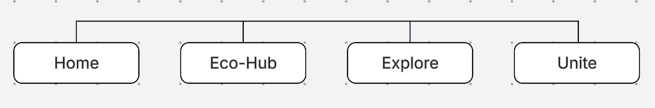
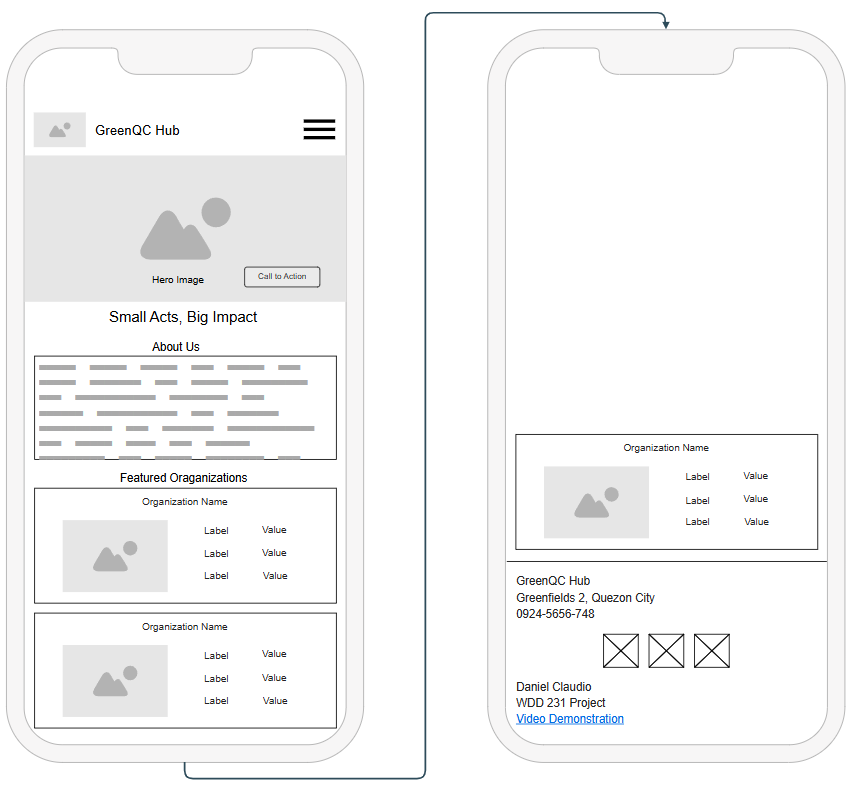
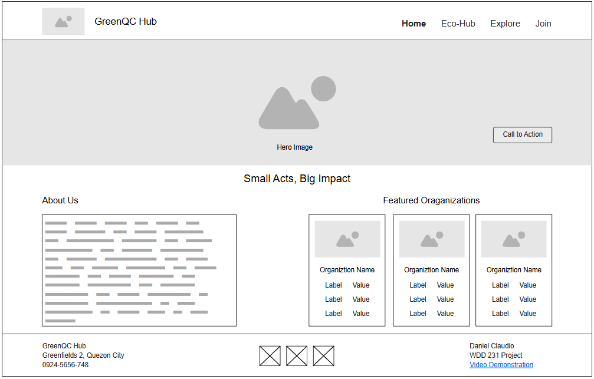

Site Name
GreenQC Hub — Connecting Quezon City for a Greener Tomorrow
This name stands for a community website that helps people in Quezon City care for the environment. “GreenQC” shows the city’s love for green living, and “Hub” means a central place where residents, students, volunteers, and eco‑groups can meet and work together.
Site Purpose
GreenQC Hub is a community website that helps people in Quezon City discover local environmental groups, join activities like tree planting and river cleanups, and learn easy ways to protect nature. You can find volunteer opportunities, get recycling and composting guides, support local environmental campaigns, and see the positive impact of your actions. The goal is to make it simple for everyone to take part and help make Quezon City greener.
Scenarios
- “I live in Quezon City and want to join a weekend cleanup at a local river. How do I find one and sign up?” – The website will show a list of upcoming events with dates, locations, and a simple registration form.
- “My school club wants to start a recycling drive, but we need partners and a place to hold it. Who can help us?” – GreenQC Hub offers a directory of eco‑organizations and a tool to send collaboration requests to local groups and the city government.
- “I own a small café and want to reduce waste. Are there workshops or mentors who can teach me zero‑waste practices?” – Users can browse sustainability workshops, request a green business audit, and read success stories from other Quezon City businesses.
Color Schema
#283618
Headings, main text
#606C38
Borders, subheadings
#FEFAE0
Page background
#DDA15E
Hover accents, highlights
#BC6C25
Shadow depth, strong accents
These five colors define the GreenQC Hub brand: natural, warm, and eco‑conscious. Forest Green and Olive create a sustainable foundation, while Light and Dark Brown add organic warmth.
Typography
Headings: 'Montserrat', sans-serif – bold, clean, modern.
Body text: 'Open Sans', sans-serif – highly readable, accessible.
All text in this document follows the defined font stack, ensuring consistent branding.
Site Map

Site structure: clear navigation focused on environmental initiatives, events, resources, and community involvement.
Wireframes — Homepage Layout
Mobile View

Desktop View
